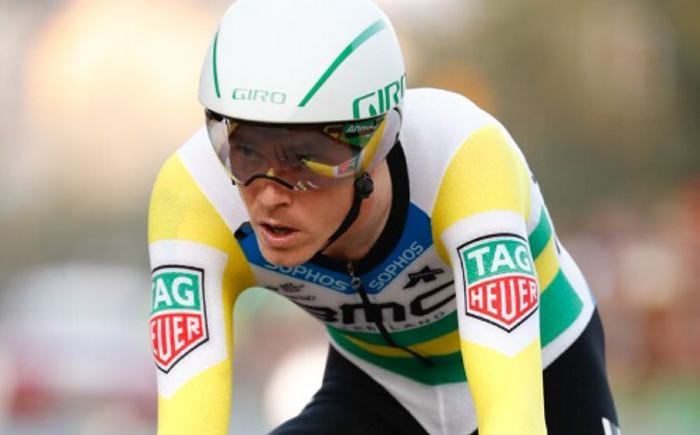

Australiano lidera Vuelta ciclística a España
El vencedor de la primera etapa de la Vuelta a España 2018, el australiano Rohan Dennis (BMC), dijo después de su victoria en la crono individual de 8 kilómetros por el corazón de Málaga capital, que no le “preocupa perder mañana el maillot rojo” logrado con su triunfo de este sábado 25 de agosto, al recorrer la distancia en 9.39 minutos.
“No me preocupa. Con todo el respeto, no me importa perder el maillot mañana. Mi objetivos eran la crono de hoy y la de la etapa 16 -la segunda contrarreloj de la carrera, 32 kms. llanos entre Santillana del Mar y Torrelavega- y el resto de los días voy a trabajar para mis compañeros”, aseguró.
“Será un esprint que pica hacia arriba y si pierdo el maillot no estaré triste, estaré contento”, insistió, avanzando como es la llegada a la subida de Caminito del Rey (3ª).
Dennis no cree que la de hoy sea una buena referencia de cara a lo que pueda dar de sí en la crono del Campeonato del Mundo, sino que será la de la etapa 16 la que le “dará la medida” de cómo se encuentra. “A esta habría que alargarla unos kilómetros para saber si puede ‘petarlo’ en el Mundial”, dijo en tono jocoso.
El australiano aseguró, también “con todo el respeto”, que “antes de este año no conocía” al tercer clasificado, Victor Campenaerts (Lotto Soudal), ya que como rivales en las contrarreloj se fijaba especialmente “(Tom) Dumoulin y Tony Martin”, pero que “a partir de ahora habrá que tener en cuanta” al belga, doble campeón de Europa. “Algún día me ganará”, vaticinó.
“Respecto a su compañero, compatriota y líder de su equipo, Richie Porte, que ha perdido mucho tiempo respecto al resto de candidatos al triunfo final, dijo que “ya se encuentra mejor” de los problemas físicos que sufre y que espera que “irá a más” para llegar ya bien “a la tercera semana”.